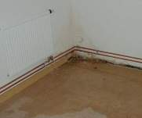
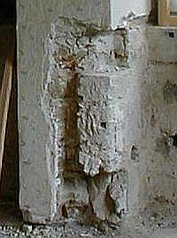
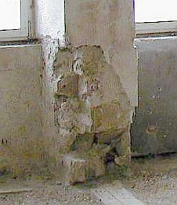

Weitere Datenübertragung Ihres Webseitenbesuchs an Google durch ein Opt-Out-Cookie stoppen - Klick!
Stop transferring your visit data to Google by a Opt-Out-Cookie - click!: Stop Google Analytics
Cookie Info. Datenschutzerklärung


 Altbau und Denkmalpflege Informationen - Startseite / Impressum
Altbau und Denkmalpflege Informationen - Startseite / Impressum
Inhaltsverzeichnis - Sitemap - über 1.500 Druckseiten unabhängige Bauinformationen
Die härtesten Bücher gegen den Klimabetrug - Kurz + deftig rezensiert +++
Bau- und Fachwerkbücher - Knapp + (teils) kritisch rezensiert
EnEV-Befreiung gem. § 25 (17 alt)! +++
Fragen? ++ Alles auf CD +++
27.10.06: DER SPIEGEL: Energiepass: Zu Tode gedämmte Häuser
Kostengünstiges Instandsetzen von Burgen, Schlössern, Herrenhäusern, Villen - Ratgeber zu Kauf, Finanzierung, Planung (PDF eBook)
Altbauten kostengünstig sanieren -
Heiße Tipps gegen Sanierpfusch im bestimmt frechsten Baubuch aller Zeiten (PDF eBook + Druckversion)
Der Schwindel mit der Wärmedämmung- Kapitel 1
2 3
4 5
6 7
8 9
10 11 12
13 14 15
16

Die Temperierung der Gebäude-Hüllflächen 16
Fußleistenheizung, Heizleisten, Sockelleisten - Wände mit Strahlungsheizung temperieren
Wand-Temperierung / Hüllflächentemperierung mit Rohr oder Kleinkonvektor/Sockelleiste-/Heizleiste/Fußleisten-Heizung
Temperierung Start - Kapitel 1 - Referenzschreiben eines Lesers zum Temperiereffekt
2 - Seit wann gibt es Temperierung? / Die Sauerei mit der Kirchenheizung
3 - Richtig oder falsch Heizen in der Kirche - Orgeln und Heizung
4 - Strahlungsgeschichtliches 5 - Der Umschwung pro Temperierung
6 - Wie funktioniert Temperierung? / Wirkprinzip Wärmestrahlung / Trocknungseffekt / Wärmeverlust: Konvektion kontra Strahlung
7 - Sachverständigengutachten über die Mängel der Temperieranlage (Auszug) / Gesetzgeber zur Anwendung EnEV bei Strahlungsheizung - Auslegungsfragen
8 - Energieverluste? Zur Dämmung temperierter Wände / Neon-Analogon
9 - Feuchte und Temperatur an der Wand
10 - Schwedenofen, Kachelofen, Lüftungsanlage + Klimaanlage - Vorhof zur Hölle?
11 - Temperiererfolg gegen feuchte Wände und nasse Mauern / Trockenlegung
12 - Großraum, Schloß, Kirche, Saal: Übliche Fehleinschätzungen und Kaputtsanierung
13 - Temperieren im Großraum - Kirche, Saal und Halle
14 - Temperierung und Hygiene
15 - Bauteilkorrosion als Folge des Warmluftstroms - Wartungsintervalle und Heiztechnik
16 - Temperierung mittels Rohr oder Kleinkonvektor/Sockelleiste/Heizleiste/Fußleistenheizung
17 - Projektbeispiele / Schloß Veitshöchheim
18 - Einbau von Temperieranlagen - Technische Hinweise
19 - Konfiguration und Bemessung der Temperieranlage
20 - Strahlungsheizung und Fensterkonstruktion
21 - Prof. Dr. Claus Meier: Glas und die elektromagnetische Strahlung / Die Tragödie der Strahlung in der Heiztechnik - Humane Strahlungswärme
22 - VDI-Richtlinien, DIN-Norm und falsche Prüfberichte
23 - Energieerzeugung und Wirtschaftlichkeit - Probleme der Ökoenergieen
24 - Erhaltung und/oder Umbau bestehender Heizsysteme / EnEV-Befreiung gem. § 25, Nachtabsenkung, Glas+Strahlung, Brennwert-Technik
25 - Bauwerkstrocknung nach Überschwemmungs- und sonstigen Durchfeuchtungsschäden / Weitere Informationen
Temperierung mittels Rohr oder Kleinkonvektor/Sockelleiste/Heizleiste/Fußleistenheizung
Im Unterschied zu Sockelleistenheizungen mit Kleinkonvektoren und Rohrsystemen mit trocken oder warmwasserdurchströmt angebauten
Wärmeverteilblechen gibt die offen geführte Rohrleitungstemperierung die Wärmestrahlung nahezu linear bei jeder
Betriebstemperatur ab. Während Kleinkonvektoren ab 45 °C durch dann erhöhte Luftkonvektion mehr Regelungsbedarf aufweisen,
betriebstechnisch Knackgeräusche erzeugen, die von den quer zu den Heizrohren aufgesetzten Konvektor-Lamellen-Flächen
aufgeheizte und aufgetriebene Heiz-Luft verstärkt wie "normale" Konvektorheizkörper (Flachheizkörper in Schachtbauweise
mit Konvektionsblech im Konvektorschaft) als Wärmeträger nutzen und die staub- und feuchtegeschwängerte Warmluft an die
demgegenüber kühleren Außenwände (die dann nach Aufheizung als Strahlungsflächen wirken) transportieren, zu
erhöhter Sockel- und Wandverschmutzung mittels Staubverschwelung und Anlagerung an den kühleren Wandflächen beitragen, ist
dieses Problemfeld bei reinen Rohrsystemen mit deutlich geringerer Lufterwärmungsfläche und deswegen auch geringerem
Konvektionseffekt auch weniger dramatisch.
Bei sehr heißem Betrieb - Problem bei sehr langen Ringleitungen, die auch noch bis ans letzte Ende ausreichend
Heizwärme transportieren müssen - ist natürlich auch das Umfeld der Rohrleitung von Anhaftung
verschwelter Staubpartikel bedroht. Gegenmaßnahme, mal abgesehen von Kürzung der Heizkreisläufe:
Fußboden reinigen, verschmutzte Bereiche ebenso.
Die hin und wieder befürchteten Zwängungsfolgen durch eingemörtelte (elastischer
Kalkmörtel!) Unterputz-Temperierheizleitungen sind praktisch bisher nicht existent, da genau deren
stabilisierende Wirkung - anders als bei intermittierend "gefahrenen" Heizleitungen üblicher Systeme
- die Überbeanspruchung der Bausubstanz und Rohrverbindungen behindert. Bei offener Rohrverlegung entfällt
diese Frage ohnehin. Die Wirkung offener Temperierleitungen, für Wohnkomfort um 20 Grad Raumtemperatur herum
natürlich ergänzt durch konvektionsarme Strahlplatten (Vorsicht: elektrisch geheizte Steinplatten /
Marmorheizung haben wg. ca. 90 °C Oberflächentemperatur hohen Konvektionsanteil!) oder sonstige
Zusatzmaßnahmen zur Leistungserhöhung erfolgt sozusagen umwegfrei, während Heizleisten vorwiegend durch
erwärmte Luft die Wände indirekt erwärmen.
Verlegemethoden und Planungsaufwand - Aufputz ./. Unterputz
Die aufwendigen und nur indirekt temperierten Wand-Boden-Vorsatzschalen als Unterflur-Fußbodenheizung der ersten Generation
machten nicht nur wirtschaftliche Probleme. Was geschah mit historisch sehens- und erhaltenswerten Böden und
Wänden? Was funktioniert auch mit kleinem Budget? Hier brauchte es angepaßte Lösungen.
Folglich wurde die Hüllflächentemperierung technisch weiterentwickelt und sozusagen ausgemagert als "Rohrheizung". Die
Rohrführung erfolgt dabei offen oder in Mauerwerksschlitzen eingeputzt, manchmal auch mit im
Boden geführten zusätzlichen Heizrohren, teils mit Rücklaufführung unter dem Fensterbrettniveau,
teils mit Unterputz-Umfahrung der Fensterlaibungen, ggf. auch von vornherein oder im Nachhinein ergänzt durch
Strahlungsflächen aus mehr oder minder abgespeckten Metallheizkörpern oder leitungsdurchzogenen
Trockenbauplatten (die bei geschicktem Konstruktionsaufbau im leichten Ständerbau oder bei erhöhten
Ansprüchen an die Oberflächengestaltung des Raumes sinnvoll eingesetzt werden können).
Hier bietet die Industrie und das konstruktive Geschick des Ingenieurs viele Varianten, deren richtige Systemwahl allerdings oft von
unrealistischen Bemessungsmethoden "nach Norm" behindert werden. Dabei sind eben auch substanzzerstörerische
"Unter-Putz"-Wandheizsysteme, die als havarieriskante Leitungsmaximierung mit hoher Trefferquote bei Bild- und
Regalhängung sowie wegen ihrer Wirkungsminderung durch Unterputz-"Verschattung" und Absaufen der Wärmeenergie
im wärmeableitend-massiven Umfeld des Heizrohrs als Energieschleudern gelten.
Bezeichnenderweise bleiben die Antworten der Schlitzfans nach dem tatsächlichen Heizenergieverbrauch ihrer gerade im
bajuwaruisch-österreichischen Sprachraum sehr beliebten Temperiertechnik im Dauereinsatz meist mehr als mager, dürftig, knapp,
wenig detailreich, still und stumm bis aggressiv "Sie glauben meinen sakrosankten temperiertechnischen Offenbarungsgeheimnissen nicht?
Dann verrat' ich Ihnen auch nix!"
Die Unterputzverlegung mag zwar gestalterisch unaufdringliche Lösungen bieten, vermindert die erforderliche
Betriebstemperatur je nach beheizter Wandfläche, ist sozusagen pflegeleicht und vermindert das Risiko der
Wandverschmutzung bei Heißbetrieb, hat aber auch technische und wirtschaftliche Nachteile, die bedacht werden
müssen:
Das Schlitzen zerstört (gnadenlos oft sogar denkmalgeschützte) Bausubstanz und erhöht die
baubedingte Gefährdung und Verschmutzung des Umgebungsbereichs;
Das Schlitzen und anschließende Verputzen kostet wesentlich mehr Zeit und Geld als die offene Verlegung;
Falsch bzw. zwängungsreich eingeputzte Heizleitungen erzeugen ggf. Temperaturdehnungen, die vielleicht nicht
dauerhaft von der Umgebung aufgenommen werden können (siehe hierzu: Temperaturdehnzahl
der Baustoffe) und dann zur Öffnung derRohr-Lötstellen führen können;
Die Kreuzungspunkte mit den üblicherweise ebenfalls unter Putz verlegten Elektroleitungen bedürfen sorgfältigster
Planung und führen meist zur Vertiefung bzw. Erweiterung der bauwerksverletzenden Schlitze;
Eigentlich kommt es bei der Hüllflächentemperierung ja nicht auf die Erwärmung des Wandquerschnitts an, sondern auf die
erhöhte Tempereratur der Wandoberfläche. Verputzte Rohre "pumpen" aber durch kontaktbedingte Wärmeleitung (vgl. oben) viel
"unnütze" Energie in das Mauerwerk, die dort eigentlich nicht gebraucht wird. Energetisch effizienter ist also die offene
Leitungsführung, deren Strahlungswirkung, abhängig von der Oberflächentemperatur des Rohres, durch Verputzen
erheblich abgemindert würde. Verputzen dämpft also die Temperierwirkung, den Heizkomfort und kostet deutlich mehr Baukosten und
nicht gerade selten über drei mal Energie als die unverputzte, offen liegende Temperieranlage.
Wird zu tief eingeschlitzt oder unzureichend dimensioniert, ist mangelhafte Erwärmung des Innenraums unausweichbar. Bei
gleichzeitig erhöhten Verbrauchskosten weit über 30 Liter Heizöl / 300 kWh je Quadratmeter geheizte Fläche im Jahr.
Es geht ja um Wärme(ab)strahlung der Rohre, die durch Absorption des Putzauftrags, aber auch des Mauerwerks in der Leistung
drastisch vermindert wird. Hier tun sich Regreßmöglichkeiten auf, die sowohl die Planerhaftpflicht existenzgefährdend
entfallen lassen (grob fahrlässiger Normverstoß), wie auch dem Bauherrn viele Einreden wegen
unverhältnismäßigem Mehrverbrauch offerieren. Nur mit qualifizierter Beratungs- und Vertragsstrategie kann hier den
existenzgefährdenden Risiken ausgewichen werden.
Wer unbeschränkte Normeigenschaften zusichert, dennoch innovativ erlösergleich herumplant und Mißerfolge seiner
Experimentalheiztechnik einheimst, muß sich dann eben nach etwas anderem umgucken oder am nächsten Schornstein aufhängen;
Verdeckte Rohrführung (z.B. Lehmmörtelwand mit Unterputz-Wandheizung) erhöht die Trägheit und
den Energieverbrauch der Anlage durch Erwärmung der rohrnahen Wandbereiche ganz wesentlich und erfordert im
Einzelfall erhöhte Anheizzeit, verstärkte Leitungsauslegung oder sonstige Zusatzmaßnahmen, um vor allem
bei dünneren Außenwänden auf kurzfristige Schwankungen der Außentemperatur besser reagieren zu
können. Dieser Auszug aus einer Beratungsanfrage vom 6.10.2008 bestätigt wieder mal in aller Deutlichkeit,
worum es hierbei geht und was von "Einputzfans gerne vehement bestritten wird:
"Wir wohnen seit 2003 in einem freistehenden Einfamilienhaus in Norddeutschland, das 1954/55 in massiver Bauweise errichtet
wurde ... Zwei-Schalen-Konstruktion ... innere Schale mit Kalksandstein ... äußere mit hellrotem Klinker aufgemauert ....
Zwischen beiden ... Luftschicht.
... Baubiologe und Lehmbauer riet ... Einbau einer Hüllflächentemperierung ... System funktioniert ... in allen Räumen
... gleichbleibende 20 °C ... angenehm warm und behaglich ... keinerlei Probleme mit Schimmel ... Gas-Brennwertkessel ...
gleichzeitig ... Warmwasser bereitstellt ... heizen ganzjährig ... ohne Nachtabsenkung. Der Temperaturfühler der Anlage
befindet sich an der Nordwand des Hauses, etwa 2 cm tief im Klinker eingeputzt. Die Heizkurve des Kessels haben wir nach dem ersten
Winter des „Trockenheizens“ angepasst, sodass der Kessel längere Zeiten im Bereich seines besten Wirkungsgrades (Vorlauf
< 50°C) arbeiten kann und im Sommer mit niedrigsten Temperaturen (20 – 25°C) läuft. ... Hüllentemperierung als
Unterputz-Wandheizung ... gebaut ... Kalk-Zementputz geschlitzt, die Vorlaufleitungen in Höhe der Sockelleisten und den Rücklauf
unterhalb der Fensterbretter in Lehm eingeputzt und mit Rücklaufbegrenzern ausgestattet. Auf die Wandfläche zwischen beiden
Rohren wurde ebenfalls Lehmputz aufgebracht.
[Lt. Telefonat am 23.10.08: Geschoßübergreifende Steigstränge auf die Wand verlegt, aber mit Lehm dick
ummantelt, aktuelle Verbrauchswerte über 30 cbm Gas/qm im Jahr, entsprechen über 30 Liter Heizöl/qm]
... Die Therme muss schon bei vergleichsweise milden Außentemperaturen mit hohen Vorlauftemperaturen arbeiten,
wodurch sich ihre Effizienz verschlechtert. Angesichts immer weiter steigender Gaspreise suchen wir ... nach
Einsparmöglichkeiten ... schon wieder zig Tausende € in einen Holzvergaserkessel oder eine Pelletheizung
investieren ... was wir nicht können und sich vielleicht niemals rechnet ... Frage nach dem Sinn und Nutzen einer
Kerndämmung mit einem Dämmstoff, der die solaren Gewinne nicht ausschließt und das funktionierende
System von Feuchte und Austrocknung nicht stört ... Perlite ... „hydrophobierte Dämmstoffe“ ...
Glas- oder auch Korkgranulat ... ?"
Aus einer Beratungsanfrage vom 17.02.09 geht hervor, wie sinnvoll es gerade in Massivbauten ist, auf eingeputzte
Heizsysteme zu verzichten [Ergänzungen gem. Bauherrnauskunft im Beratungstelefonat]:
"Alle Außenwände bestehen aus unregelmäßigen Sandsteinen und sind [im Obergeschoß] 60 cm dick.
Im Erdgeschoss sind sie 75 cm stark. ... Der [Dach]Boden ist nicht ausgebaut. Im übrigen Haus heizen wir mittels
Fußleisten [Heizzentrale/Heizbetrieb: Holzvergaser 2/3 und Gastherme 1/3] ... In dem im Prinzip ungedämmten Haus
[Wohnfläche ca. 80 qm] verbrauchen wir im Moment etwa 116 kWh/m² [entsprechen etwa 11,6 Liter Heizöl]
im Jahr. Strahlungsheizung ist sehr angenehm, [mit] ziemlich hohe[n] Vorlauftemperaturen. ..."
Verborgene Rohre sind beim Nageln/Bohren havariegefährdet und können die Gestaltungsfreiräume vermindern. Langfristig
ist die verlegte Führung nicht zu befürworten, da ihre Wartung und Erneuerung mit großer Konstruktionszerstörung
verbunden ist. Wer nur für ein paar Jahre bzw. nur für sich baut, interessiert sich dafür allerdings nicht. Solange er
immer ein Rohrortungssystem vor dem Bilderaufhängen und Wandregalmontieren einsetzt ...
Havarie, Ergänzung für erhöhten/geänderten Bedarf, Instandhaltung, letztlich Austausch sind bei
Unterputzführung grundsätzlich mit mehr baulichem Aufwand verbunden.

Diese Havarie in meinem Kellerraum (erst bei Heißbefahrung entdeckte undichte Lötnaht im Eck) war dank
offener Rohrführung (noch ungestrichen) schnell geortet und fast ebenso schnell repariert.
Viel Rohr kostet viel. Mehrputzstärken ebenfalls. Anschlußprobleme an Fenster- und Türöffnungen, Nischen,
Vorsprünge. Und Flächenverlust.
Planungsqualität: Hier sollten Sie gerade bei umfangreicheren Maßnahmen darauf achten, daß Ihr Heizungsplaner
zunächst die geschickteste Berechnungs-, Trassierungs- und Auslegungsmethode wählt, die zum für Sie (!) wirtschaftlichsten
Ergebnis führt. Unterdimensionierung spart zwar Geld bei der Errichtung, kann aber durch höhere Temperaturbedarf an der
reduzierten Strahlfläche höhere Konvektion und damit gigantische Abluftverluste mit entsprechenden Betriebskosten verursachen.
Überdimensionierung kostet mehr Geld und ist gestalterisch problematischer, kann aber mehr im Strahlungsbereich betrieben werden und
damit günstig betrieben werden. Auch die bestands- und nutzergerechte Anordnung der Strahlkörper - als Linientrasse, als
Flächenstrahler, auf bzw. in Boden, Decke oder Wand - stellt sich als planerische Herausforderung. Hier in allen Bereichen zu
optimieren braucht vor allem Erfahrung.
Fast ebenso wichtig (vor allem im Bestand) - wenn alles (nicht selten) dann von Handwerkströpfen durchgezogen wird - die bis ins
1:1 detaillierte Planung mit zeichnerischem und querschnittsgetreuem Nachweis aller Leitungen in Grundrissen, Deckenaufsichten, Schnitten
und Wandansichten, mit allen Kreuzungen, Durchbrüchen vertikal und horizontal, Ermittlung und planerische sowie zeichnerische
Detaillösung aller Konflikte der geplanten Trassen und Anlagenteile mit der Bausubstanz, Berücksichtigung aller dieser dann
kostenrelevante Bauleistungen entsprechenden Planungsangaben in der Leistungsbeschreibung gem. VOB. Lassen Sie
sich besser nicht abwimmeln von unengagierten und auf Kostenmaximierung geeichten Planern nach dem Motto "es
geht auch ohne Planungsqualität, die aus dem Computer (vielleicht eines Heizungsbauers oder auch Anlagenproduzenten "umsonst" gegen
Auftragszuschanzung) gespuckte Stückliste hat schon immer genügt". Zumindest jeder bauleitende Architekt und erfahrene Bauherr
hat schon am eigenen Leib (und Geldbeutel) verspüren müssen, welche Planungs-, Finanz- und
Baustellenkatstrophen damit vorprogrammiert werden.

+
So schön werden Heizungstrassen und Heizkörperzuführungen im barocken Bestand "unter Putz verlegt, wenn
der denkmalerfahrene Planer den altbaubewährten Heizungsbauer seine Bauerei "wie immer" machen läßt. Oder eben wie meist
ganz ohne Planer, ganz alleine vom braven Handwerksmann durchdacht. Unter den Augen und mit Projektförderung
der staatlichen Denkmalpflege- aber selbstverständlich!
Auch darin lag ein wichtiges Motiv, daß ich als Architekt mir lieber selbst die Haustechnikplanung (Wasser, Abwasser,
Heizung, Lüftung, Elektro und auch Tragwerksplanung) ins Büro integriert habe. Seitdem ich diese Technikbereiche für meine
eigenen (und teils von Kollegen durchgezogenen) Projekte in der Aufgabenstellung angemessener Durchdringung (natürlich auch
HOAI-Honorierung) erarbeite, schlafe ich ruhiger. Leistung hat freilich ihren Preis, aber dann auch ihre geschuldete Wirkung. Bedenken
Sie das ausreichend kritisch bei der Auftragsvergabe an Ihren Heizungsplaner. Und prüfen Sie seine Referenzen bis zur
Leistungsbeschreibung und planerischen Darstellung. Mit den üblichen "Systemdarstellungen", die mit der späteren
Einbausituation nur wenig gemein haben, sollten Sie sich nicht zufrieden stellen lassen. Prüfen Sie die Vorgaben zu den einzelnen
Leistungsstufen gem. HOAI (§ 73 ff.). Notfalls kommentargestützt. Sie werden sich wundern, was vom Planer hier gefordert (und
nicht immer gebracht) wird.
Neu: Themenlink: Haustechnikplanung im Bestand - Schematische Übersicht der
Problemlage
Zur Orientierung betr. Planungskosten mögen die hier vorliegenden Erfahrungswerte dienen, die
für den Einbau einer offen geführten und mit handelsüblichen Strahlplatten ergänzten Hüllflächentemperierung
(Baukosten ca. 13.000-15.000 EUR) für ein Einfamilienhaus in Massivbauweise mit ca. 120 qm beheizte Wohnfläche exklusive
Bauleitung/Objektüberwachung anfallen:
- Variante 1 (HOAI-Leistungsphasen 1-6): An das Objekt angepaßte Maßnahmenbeschreibung und Kostenermittlung,
alternativer (Speicherfähigkeit Bausubstanz, tatsächlicher (geringer) Lüftungswärmeverlust,
solardurchlaßgradabhängiger Fenster-U-Wert, Standortwerte Klima und Solareinstrahlung berücksichtigt) Berechnung
Wärmebedarf, Anlagen- und detaillierte Ausführungsplanung (Leitungsquerschnitte und -trassen, Durchbrüche, Verteiler mit
hydraulischer Einregelung der Heizkreise, Ventile, Thermometer, Hähne, Heizflächen und Energieerzeugungsanlage inkl. Regelung),
inkl. Vorlage Unterlagen für Ausschreibung, die dann bauherrnseits durchgeführt wird, ohne Mitwirkung Vergabe, ohne
Objektüberwachung - Kosten ca. 3 - 4.000 EUR zzgl. MWST.
- Variante 2: für weitere Leistungsphasen, größere Objekte und Umbauvorhaben im Bestand abhängig von
Anlagen-Baukosten entsprechende Mehrkosten gem. HOAI.
- Variante 3: reduzierte Leistungen mit vereinfachter Berechnung und Vergabe (auch für Eigenleistung) ca. 1.000-1.500 EUR
zzgl. MWST nach Einzelabsprache, Abrechnung nach Aufwand gem. HOAI-Stundensätzen |
Dabei plädieren wir - selbstverständlich ohne jegliche Beachtung der negativen Auswirkung auf die das
Planungshonorar bestimmenden Baukosten! - jeweils für eine minimierte Anlagenauslegung, die nach Betriebserfahrung
wegen der offenen Vorwand-Bauart leicht nach Bedarf mit zusätzlichen Strahlplatten ergänzt werden kann.
Weitere Beratung zu Baukosten und Bauart hier (kostenpflichtig).
Die über der Sockelleiste geführte offene Rohrleitung der Hüllflächentemperierung ist also nicht
nur denkmalpflegerisch, sondern auch im sonstigen Alt- und Neubau eine vertretbare Lösung mit geringstem Eingriff
und Kostenaufwand. Ohnehin sind die Sockelzonen in historischen Räumen meistens ramponiert, sodaß eine dort
angebrachte Leitungsführung auch unter thermisch und feuchtetechnisch verträglichem
Neuputz keine dramatischen Verluste des historisch wertvollen Bestands bewirkt. Und wenn die offenen Cu-blank-Rohre
zur Erhöhung der Abstrahlleistung im Sockelton mit Leinölfarbe "weggestrichen" sind -
welchen großen Geist stört das?
Daß die oben diskutierten Heizvarianten immer von einer Warmwasser-Zentralheizung ausgehen, dürfte klar sein. Daß der
Kilowattstundenverbrauch dabei neben den Transportverlusten auch vom Kesselverlust im Heizraum und dem Abgasverlust über den Kamin
abhängt auch. Wer hier noch optimieren will, muß dann eben eine elektrisch betriebene Direktheizung verwirklichen. Nur die
elektrischen Heizungen wandeln die komplette Heizenergie auch als Wärme im Raum um, egal, ob es sich dabei um Marmorplatten,
Naturstein, Carbonfaserplatten, Glasplatten oder Blechplatten handelt, in die die Wärme durch geeignete Elektrotechnik wie
Heizdrähte, Widerstandsheizleiter, Heizkabel usw. eingespeist wird. Bis etwa 50 Prozent weniger Kilowattstunden können dabei nach
einer Vergleichsuntersuchung über eine ganze Heizperiode (Autor: Dr.-Ing. Peter Kosack, TU Kaiserslautern) bei elektrischer
Direktheizung (Wärmewellenheizung, Infrarot-IR-Strahlungsheizung) weniger an, als z. B. bei einer Warmwasser-Gasheizung. Wobei die
optimale Bemessung berücksichtigen sollte, daß geringere Betriebstemperaturen zu höherem Strahlungsanteil der
temperierten Heizfläche führen und damit bei geringerem Heizluftverlust und Energieverbrauch geheizt werden kann. Bei oft geringeren
Anschaffungskosten und kosten- sowie staubtreibenden Baueingriffen. Doch selbstverständlich muß dabei die Beschaffenheit der Raumhüllen
betreffend Massivität (Wärmeleitfähigkeit, Speicherkapazität, U-Wert), die Raumgröße, die gewünschte oder sinnvoll optimierte Anordnung
der Wärmequellen im Raum, eine gegebenenfalls vorhandene Heiztechnik (Kesselsystem, Heizkörper) und die geplante Betriebsweise individuell
beurteilt werden, um die Wirtschaftlichkeit der alternativen Heizsysteme auf längere Sicht abschließend einzuschätzen. Wie immer:
Vorsicht vor Schnellschüssen!
Da die Montage und die Produkttechnik der Elektroheizung selbst deutlich preisgünstiger als neuverlegte WW-Heiztechnik beliebiger Bauart
ist, und dann neben den üblichen Leckageproblemen an Heizrohren und Verteilern sowie das Auffrostungsproblem auch der Heizraum, der
Tankraum/Erdtank, im Falle Ferngas die Monopolbindung, dann der Kaminkehrer und auch die wiederkehrend anfallenden Heizungsinspektionen
entfallen, muß bei der Entscheidungsfindung für das im Einzelfall richtige und wirtschaftlichste Heizsystem ebenfalls berücksichtigt werden.
Als produktneutraler Ingenieur ist man da in der Entscheidung freier - als SHK-Heizungsbauer oder Elektriker oder kickbackverwöhnter
Fachplaner vielleicht nicht ganz so, wie es sich ein sparfuchsiger Bauherr wünschen könnte ...
Weiter: 17 - Projektbeispiele / Planungsdetail / Regelungsdetails / Schloß Veitshöchheim
Energiesparseite mit weiterer Aufklärung
Bauberatung - auch mit Angeboten zur Planung, Kosten und Ausführung Hüllflächentemperierung
Zur Baustoffseite - mit vielen Tips zum besseren Bauen
Altbau und Denkmalpflege Informationen Startseite